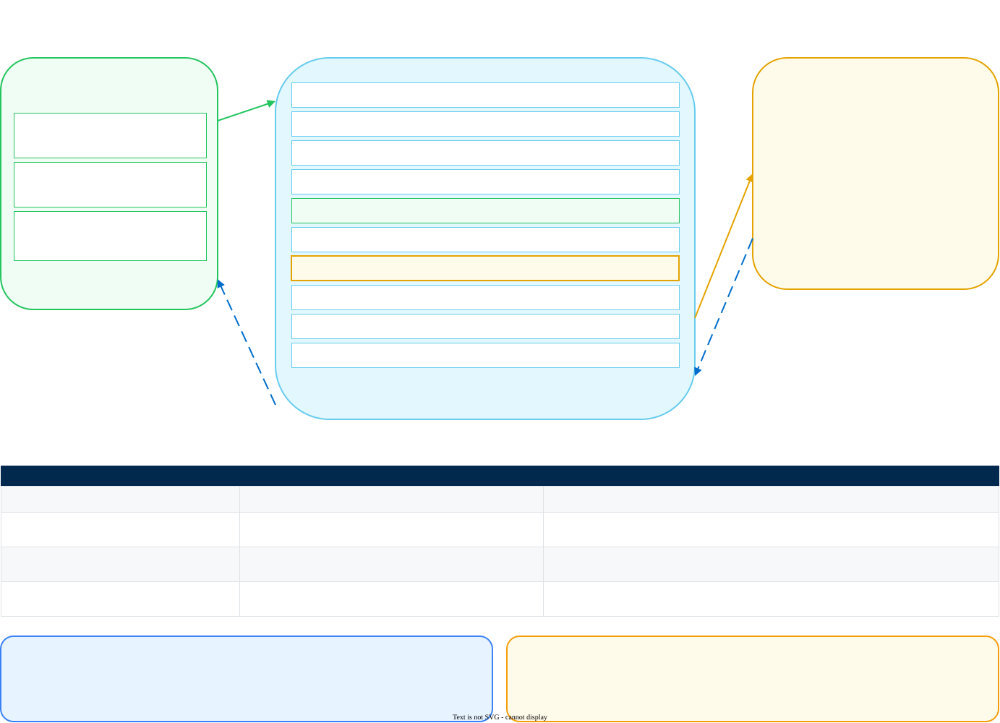

Model Provider Prerequisites
What to prepare for each model provider before you put the AI Gateway inline
This document is for the customer. It tells you what to collect before the first work session. It does not tell you how to use the Strata Cloud Manager wizard. For the wizard steps, read the core deployment guide.
Read this with two people. The first person owns the model provider account. The second person can change the configuration of an application. You need both.
1. How an application connects
An application connects to the gateway when you change three values. You do not change the logic of the application. You do not install an agent.
| Value | What you set it to | Why |
|---|---|---|
| Base URL | The gateway address | The application sends the request to the gateway, and not to the model provider. |
| API key | The gateway API key | The gateway authenticates the application. The application no longer holds a provider key. |
| Model reference | @<slug>/<model-name> | The slug tells the gateway which integration to use. |
Some applications need a fourth value. These applications send a bare model name. They cannot send the slug in the model field. For these applications, add the header x-portkey-provider: @<slug>. The client applications page shows which applications need the header.
Developers frequently ask how much code must change. The answer is three values, and sometimes four. In most SDKs these are arguments to one constructor. The request body does not change. The response body does not change.

2. What every provider needs
Collect these items one time. They apply to all providers.
| Item | Detail |
|---|---|
| A list of your applications | Write down each application that calls a model. Include the applications that nobody approved. The gateway cannot see an application that does not point at it. |
| A provider credential | One credential for each provider. The gateway holds it. The applications do not. |
| A name and a slug | You choose the slug. Use lowercase letters, digits and hyphens. Do not use a space or a slash. |
| A list of models | The gateway can serve only a model that you provision. Write down the exact model names. |
| A person who can change an application | This person changes the three values and deploys the application. |
| A change window | The change is small. The approval around it is frequently not small. |
3. Open AI
| Item | Detail |
|---|---|
| Credential | One platform API key from the Open AI platform. |
| Organization ID | Optional. Set it if the owner of the key belongs to more than one organization. This sends the cost to the correct organization. |
| Project ID | Optional. Set it to keep the cost records for one project. |
| Model reference | @<slug>/<model-name>, for example @default-openai/gpt-4.1 |
| SDK | The Open AI SDK, in any language. Set base_url and api_key. |
| Streaming | Read the warning below. This is important. |
Open AI sends no usage data when the application sets stream: true. The gateway then records zero tokens and zero cost. The budget does not see the money.
To correct this, the application must also send stream_options: {include_usage: true}. This applies to all Open AI compatible providers. Azure OpenAI is one of them.
4. Anthropic
| Item | Detail |
|---|---|
| Credential | One API key from the Anthropic console. |
| Model reference | @<slug>/<model-name> |
| SDK | The Anthropic SDK, in any language. Set the base URL and the API key in the client constructor. |
| Path | Do not add /v1 to the gateway address. The Anthropic SDK adds its own path. |
| Header | A client that sends a bare model name needs x-portkey-provider. Claude Code is one of them. |
5. Google
The Google tile is the Gemini Developer API. A Google AI Studio API key opens it. This is the fastest way to reach a Gemini model.
| Item | Detail |
|---|---|
| Credential | One API key from Google AI Studio. |
| Model reference | @<slug>/<model-name> with a gemini- model name. |
| SDK | The Open AI SDK against the gateway. The gateway translates the request. |
Use the Google tile for a quick connection with an API key. Use the Vertex AI tile when you need your own Google Cloud project, IAM control and project billing. The two tiles serve the same models. They are separate integrations.
Vertex AI needs a project ID, a region and a service account JSON key. The core deployment guide gives the detail.
6. Azure OpenAI
Azure OpenAI serves models from a resource in your Azure subscription. Collect three things before you start.
| Item | Detail |
|---|---|
| Resource name | The first label of the endpoint host. The host looks like https://<resource-name>.openai.azure.com. |
| Deployments | One entry for each deployment. Each entry has a deployment name and an API version. Mark one entry as the default. |
| API version | Use the same api-version value that your applications use today. |
| Credential | One of three. An API key is the simplest. An Entra ID service principal is more secure. A managed identity applies only to a self-hosted gateway on Azure. |
| Role | For Entra ID or a managed identity, give the principal the Cognitive Services OpenAI User role on the resource. Do not give Contributor. Do not give Owner. |
| Model reference | @<slug>/<deployment-name>. The application names the deployment, and not the model. |
In Azure, you give a name to a model when you deploy it. The application uses that name. Write down the deployment names. Do not write down the model names.
7. Azure Foundry
Azure Foundry is a separate tile in the catalog. It gives one API for a range of foundation models.
The field list for this tile is not in the documentation that this site mirrors. Open the tile in your own tenant and record the fields before the work session. Expect a project endpoint, a credential and a model name, because the Azure AI Foundry API uses these.
Do not promise a configuration for this tile until you see the fields. Tell the customer that you will confirm them.
The two products share the Azure name. They are different products on different runtimes. A configuration for one does not work for the other.
8. Bedrock
AWS identity controls access to Bedrock. There is no single provider key. The tile gives three ways to authenticate. Each way also needs the AWS region.
| Method | Detail |
|---|---|
| Access key | An IAM access key ID and a secret access key, with the region. This is the fastest method. The key is long-lived, so rotate it. |
| Assumed role | A role ARN, the region, and an optional external ID. The gateway gets temporary credentials. No long-lived secret is stored. The trust policy of the role must permit the gateway principal. |
| Bedrock API key | An API key from the Bedrock console, with the region. |
Give the identity these permissions on each model that you provision:
bedrock:InvokeModelbedrock:InvokeModelWithResponseStreambedrock:GetInferenceProfile— only if you call a model through an inference profile
The model reference uses the full Bedrock model ID. Include the cross-region prefix. An example is @default-bedrock/us.anthropic.claude-3-7-sonnet-20250219-v1:0.
The trust policy must name the principal that the gateway runs as. For a self-hosted gateway on EKS, this is the role of the pods. For a hosted gateway, the principal belongs to Palo Alto Networks and this guide does not have it. Use an access key or a Bedrock API key with a hosted gateway.
9. Bedrock Mantle
Bedrock Mantle is a separate tile. It gives Open AI compatible API endpoints on Amazon Bedrock.
The field list for this tile is not in the documentation that this site mirrors. Open the tile in your own tenant and record the fields.
The value of this tile is the protocol. An application that speaks the Open AI protocol can reach a Bedrock model without a change to the request format. If you have applications that use the Open AI SDK and you want Bedrock models, examine this tile first.
10. Claude Platform on AWS
This tile gives Claude platform capabilities through AWS. Anthropic manages the infrastructure.
The field list for this tile is not in the documentation that this site mirrors. Open the tile in your own tenant and record the fields.
This tile is not the same as the Bedrock tile. Bedrock serves Claude models that AWS hosts. Confirm which one the customer has bought before you choose a tile.
11. SDK versions
The gateway speaks two protocols. Your SDK must speak one of them. The gateway does not need a special SDK.
| SDK | Minimum version | What to set |
|---|---|---|
| Open AI, Python | 1.0 or later | Set base_url to the gateway address with /v1. Set api_key to the gateway key. Version 1.0 introduced base_url. Version 0.x uses openai.api_base and is more difficult. |
| Open AI, Node | 4.0 or later | Set baseURL and apiKey in the client constructor. |
| Anthropic, Python | 0.20 or later | Set base_url with no /v1. Set api_key to the gateway key. |
| Anthropic, Node | 0.20 or later | Set baseURL and apiKey. |
| Any other SDK | Any version that permits a custom base URL | If the SDK cannot take a custom base URL, you cannot route it. This is the only hard limit. |
The versions above come from the point at which each SDK introduced a configurable base URL. Confirm them against the release notes of the SDK that your customer uses. Do not quote them as a product statement.
12. API calls and the request format
The gateway accepts the same calls that the provider accepts. The body of the request does not change.
| Endpoint | Use |
|---|---|
POST /v1/chat/completions | The Open AI chat protocol. Most applications use this. |
POST /v1/responses | The Open AI Responses protocol. The Codex CLI uses this. |
POST /v1/completions | The older Open AI text protocol. |
POST /v1/embeddings | Embedding calls. A retrieval stack uses these. |
POST /v1/messages | The Anthropic protocol. Claude Code and the Anthropic SDK use this. |
Streaming works on all of these endpoints. The gateway sends server-sent events. A guardrail result arrives inside the stream.
13. The cache and the latency
The gateway has two caches. Both remove the call to the provider when they match.
| Cache | What it matches | When to use it |
|---|---|---|
| Simple cache | The same text | Use it when many users send the same prompt. |
| Semantic cache | Text with the same meaning | Use it when users ask the same question in different words. It uses cosine similarity. |
A cache hit removes nearly all of the latency. The gateway answers, and it does not call the provider. A cache miss adds a small amount of time.
A semantic cache gives a previous answer for a similar question. A semantic search finds documents by meaning. The gateway does the first. It does not do the second. If you use the cache as a retrieval layer, you get old answers and not relevant ones.
The gateway adds little latency of its own. The model is almost all of the time that the user waits. The diagram in section 1 shows this.
14. Open questions
These questions have no answer in the documentation. Do not guess at them in front of a customer. Ask the product team.
Why it matters. An application that uses the AWS SDK today sends a Bedrock native request. To use the gateway, that application must change to the Open AI protocol or the Anthropic protocol. This is more work than three values.
What is true today. The gateway accepts the Open AI protocol and the Anthropic protocol. The Bedrock Mantle tile gives Open AI compatible endpoints on Bedrock, which can reduce the work. This is not the same as the gateway accepting a Bedrock native request.
What to do. Ask your product team for a roadmap statement. Record the answer and the date. Do not give a date to the customer until you have one.
Azure Foundry, Bedrock Mantle and Claude Platform on AWS appear in the catalog. The mirrored documentation gives one line for each. Open each tile in your own tenant, record the fields, and send them to the person who maintains this page.
15. Checklist
Complete this before the first work session.
- A list of every application that calls a model
- The model provider that each application uses today
- The location of the provider key in each application today
- A first application that carries a low risk
- A person who can change that application and deploy it
- A change window for that application
- A working credential, in your hand
- The exact names of the models to provision
- A slug that uses only lowercase letters, digits and hyphens
- For Azure OpenAI: the resource name, the deployment names and the API version
- For Bedrock: the region, the authentication method and the IAM permissions
- For Vertex AI: the project ID, the region and a service account JSON key
- The SDK and the version that each application uses
- Confirmation that each SDK permits a custom base URL
- A list of the applications that stream their answers
- A decision on
stream_optionsfor each Open AI compatible application
Read the client applications page for the tools that your developers use. Read the customer readiness document for the people and the lead times. Use the connectivity validator to prove that your environment can reach the gateway.